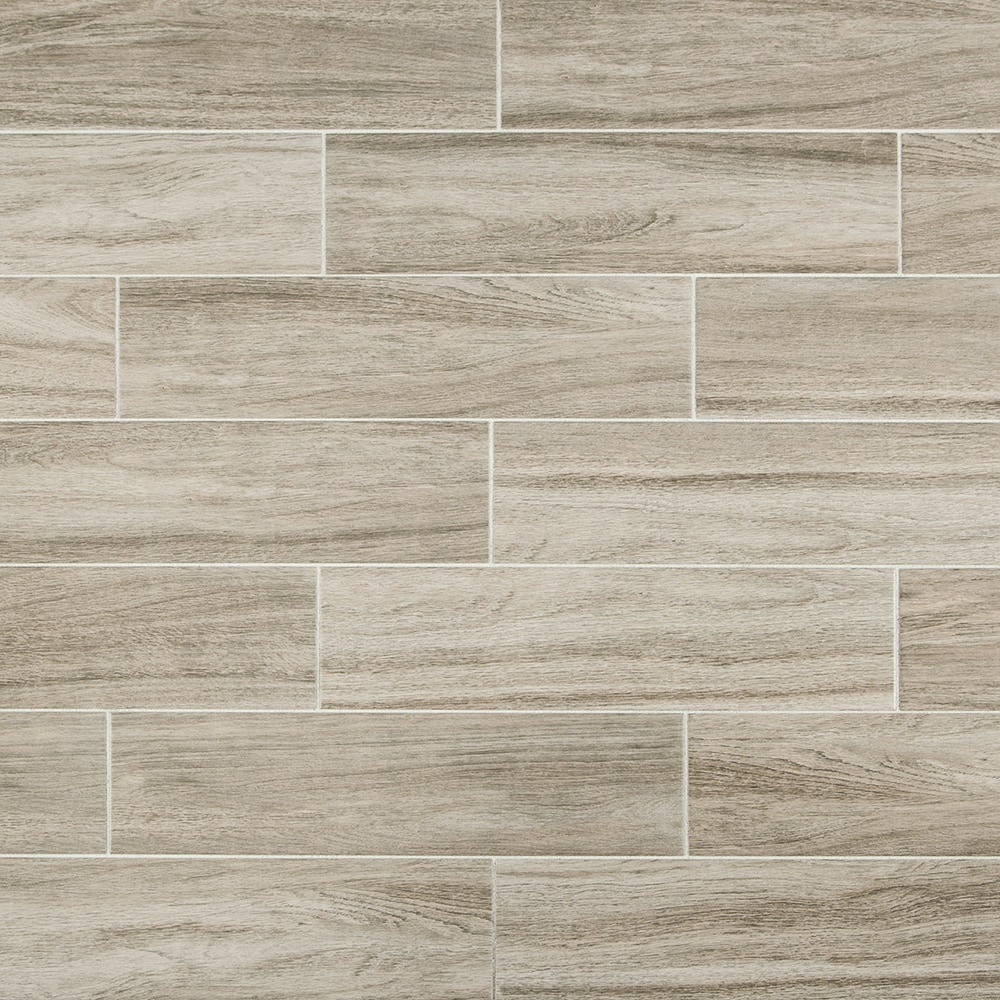

<!DOCTYPE html>
<html lang="en">

<head>
    <meta charset="UTF-8">
    <title>Document</title>
</head>

<body>


    <script>
        //Тернарний оператор 

        /* var a = 10; 
         
         var msg = (a == 10) ? "a = 10" : "a != 10";
         
         alert(msg);
         */

        //Switch_Case 
        /*var day = "18";
        
        switch (day) {
            case "10":
                {
                    alert("a = 10");
                }
            break;
            case "11":
                {
                    alert("a = 11");
                }
            break;
            default:
                {
                    alert("There is no similiars");
                }
        };
    */
        //If
        /*var a = prompt("Введіть значення", "Enter here");

        if (a == "Tomato" || a == "tomato" || a == "oleg ") {
            document.write(" Введене число правельне = Tomato <br/>");
        }
        else if (a == "Raizen" || a == "raizen") {
            document.write(" Введене число правельне = Raizen <br/>");
        }
        else{
             document.write(" Введене число не правельне <br/>");
        }
        
        document.write(" Виведе в любому випадку <br/>");*/

        //if_else_logic

        /*var trueVal = false; 
        var falseVal = true;
        
        if (trueVal){
            document.write("Перший блок if виконався");
        } 
        else if (!falseVal){
            document.write("Другий блок if else виконався");
        }
        else {
            document.write("Не виконався ніякий блок");
        }*/

        //If_else_Logic2

        /*
        var a = confirm("Отримати перше значення TRUE?");
        
        if (a) {
            document.write("Перше значення  TRUE <br/>");
        }
        else {
            document.write("Перше значення FASLE <br/>");
        }
        
        
        var b = confirm("Отримати друге значення TRUE?");
        
        if (b) {
            document.write("Друге значення  TRUE <br/>");
        }
        else {
            document.write("Друге значення FASLE <br/>");
        }
        
        
        if (a == true && b == true){
            document.write("Обидва значення TRUE ");       
        }
        else if (a == true || b == true){
            document.write("Одне із значень TRUE друге FALSE <br/>");      
        }
        else { 
            document.write("Обидва значення FALSE <br/>");
        }
        */
        //If_Example_AGE
        /*
        var age = prompt("Скільки вам років?");
        var pen = prompt("Вкажіть ваш пенсійний вік");
    
        var a = parseInt(age);
        var b = parseInt(pen);
        
        var maxAge = 120;
        
        if (a < b){
            alert("Вам ще рано на пенцію");
        }
        else if (a < maxAge ){
            alert("Вам пора задуматись над пенсією");
        }
        else {
            alert("Людина стільки не живе");
        }*/

        //Switch 

        /*var number = prompt("Введіть число 1 або 2");
        
        switch (number){
        
            case "1":
                {
                 alert("Один");
                }
                break;
                
            case "2":
                {
                    alert("Два");
                }
                break;
                
            default:
                {
                    alert("Значення відрізняється від 1 або 2");
                }
        }*/

        // Many_cases
        /*
        var number = prompt("Введіть число 1-2-3-4-5-6-7");
        
        switch (number) {
                
            case "1":
                {
                    alert("Понеділок");
                }
                break;
            case "2":
                {
                    alert("Вівторок");
                }
                break;
            case "3":
                {
                    alert("Середа");
                }
                break;
            case "4":
                {
                    alert("Четвер");
                }
                break;
            case "5":
                {
                    alert("П’ятниця");
                }
                break;
            case "6":
                {
                    alert("Субота");
                }
                break;
            case "7":
                {
                    alert("Неділя");
                }
                break;
            default:
                {
                    alert("Такого дня не існує");
                }
                
        }
        */
        //Switch_Different_cases
        /*
         var number = prompt("Введіть номер дня");
        
         switch (number){
                 case"1":
                 case"2":
                 case"3":
                 case"4":
                 case"5":
                    alert("Сьогодні будній день");
                    break;
                 case"6":
                 case"7":
                    alert("Сьогодні вихідний день");
             default:
                 {
                     alert("Введений вами номер дня не існує");
                 }
         }
        */

        //Switch_Exaple
        /*
        var coffeeSize = prompt("Розміри стаканів: 1 = Малий, 2 = Середній 3 = Велийкий. Зробіть свій вибір:");
        
        var cost = 0;
        
        switch (coffeeSize) {
                case "1":
                    {
                        cost += 25;
                        document.write("");
                    }
                    break;
                case "2":
                    {
                        cost += 50;
                        document.write("");
                    }
                    break;
                case "3":
                    {
                        cost += 100;
                        document.write("");
                    }
                    break;
                default:
                    {
                        document.write("Ви ввели невірний номер");          
                    }
                break;
        }
        if (cost != 0) {
            
            document.write("<p>Введіть " + cost + " копійок.<p> Дякуємо!!!");

        }
            */

        // Ternar
        /*
        var a = 3, b = 5, max = 0 ;
        
        
        
        if (a > b){
            max = a;
        }
        else{
            max = b;
        }
                          
        document.write(max);
    */
        //Ternar_Inner
        /*
        var a = 10, b = 20, c = 30, max = 0;
            
        max = (a > b) ? c = a : c = b ; 
            
        document.write (max);
            /*
            var quantity = 10;
            var price = 100;
            var discount = 0.75;
            var cost;
            
            cost = quantity >= 10 ? quantity * price * discount : quantity * price;
            
            document.write("Ціна: " + cost + " умовних одиниць");
            */

        //Cyclic_Stateme

        //While
        /*
        var counter = 0;
        
        while (counter < 10 ){
            counter++
            document.write(counter + "<br/>");
        }
        */
        /*
        var counter = 0;
        
        while (counter < 3) {
            counter++;
            document.write("Counter = " + counter);
            
            if (counter == 2){
                break;
            }
                
            
            document.write("Ця стрічка не виконується");
        }
        
        document.write("<p>Проведено " + counter + " ітерацій"); 
        
        */

        //While_Game_Example
        /*
        var str = "Вгадайте загаданий колір з п’яти спроб. ";
        
        var maxAttempt = 5 ; //Максимальна кількість спроб
        var attempt = 0; //Лічильник спроб
        var color = "red";
        
        while (attempt < maxAttempt) {
            
            attempt++;
            
            value = prompt(str + "Спроба №" + attempt);
            
            
            if (value != color) { 
            str = "Ви не вгадали." ;
            continue;
            }
            
            document.write("Поздоровляєм!! Ви вгадали з " + attempt + " разу!");
            
            break;
        }
        
        document.write("Кінець ігри");
        */

        //Do_While
        /*
        var counter = 0 ;
        
        do { 
            document.write(counter + "<br/>");
            counter++;
        } while (counter < 10); 
        */

        //Example

        /*
        var input;
        
        do { 
            input = prompt("Введіть значення");
            document.write("<p>" + input);
        
        } while (input != null);
        */

        // Factorial 
        /*
        var counter = prompt("Введіть число ");
        var factorial = 1;
        
        document.write("Факторіал числа " + counter + "! = ");
        
        do {
            
            if (counter == 0){
                factorial = 1;
                break;
            }
            
            factorial = factorial * counter;
            counter = counter - 1 ;
        }
        while (counter > 0);
        
        document.write(factorial);
    */

        //Cicle_For
        /*
        for (var counter = 0; counter < 3; ++counter) {
            
            document.write("<p> Counter = " + counter);
        }
        
        document.write("<p>" + counter);
        */

        //For_inner
        /*
                for (var i = 0; i < 10; i++) {

                    for (var j = 0; j < 10; j++) {
                        document.write("");
                    }
                    document.write("<br>");
                }
        */
        /*
                var a;

                for (;;) {
                    
                    a = prompt("Введіть вверх/вниз/вліво/вправо");


                    switch (a) {

                        case "вверх":
                            {
                                document.write("поверніть вверх <br/>");
                                continue;
                            }
                        case "вниз":
                            {
                                document.write("поверніть вниз <br/>");
                                continue;
                            }
                        case "вправо":
                            {
                                document.write("поверніть вправо <br/>");
                                continue;
                            }
                        case "вліво":
                            {
                                document.write("поверніть вліво <br/>");
                                continue;
                            }
                        default:
                            {
                                exit = confirm("Вийти?");
                                if (exit) {
                                    document.write("Ви завершили виконання");
                                    break;
                                } else {
                                    continue;
                                }
                            }

                    }


                    break;

                }
                */

        //Break
        /*
                var count = prompt("Скільки ітерацій провести?");
                var exit = prompt("На якій ітерації зупинитися");

                for (i = 0; count > i; i++) {
                    
                    if (i == exit) {
                        break;
                    } 
                    else {
                        document.write("Count = " + i + "<br/>");
                    }
                }
        */
        //Continue
        /*
        var count = prompt("Скільки ітерацій провести?");
        var exit = prompt("Яку ітерацію не проводити?");
        
        for (i = 0; count > i; i++) { 
        if (i == exit){
            document.write("<br/>");
        }
        else {
            document.write(i + "<p/>")
        }
        }
 */
        //LABELL
/*
        lavel: for (var j = 0; j < 2; j++) {
            for (var i = 0; i < 2; i++) {
                var input = prompt("Введіть любий текст, для того щоб вийти натисніть відміна!!");

                if (input = null)
                    break lavel;
                document.write(input + "");

            }
            document.write("<br/>");
        }
        document.write("Готово!");
*/
    </script>
</body>

</html>
